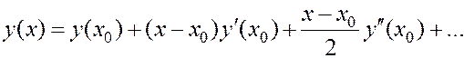
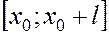
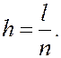
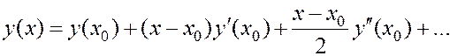
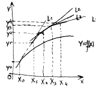
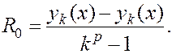

 (3)
який уже можна ви користувати для наближеного обчислення шуканої функції
де - нескінченно мала величина порядку
МЕТОД ЕЙЛЕРА
Нехай на відрізку  потрібно знайти розв’язок задачі Коші (1)-(2). Для цього даний відрізок розіб’ємо на n рівних частин точками, де
, 
Величину називають кроком чисельного інтегрування диференціального рівняння (1). В околі точки функцію розкладемо в ряд Тейлора
розкладемо в ряд Тейлора
 (3)
який уже можна ви користувати для наближеного обчислення шуканої функції  . В точці для малих значеннях можемо двома членами ряду (3). У відповідності із цим, отримуємо
. В точці для малих значеннях можемо двома членами ряду (3). У відповідності із цим, отримуємо
де - нескінченно мала величина порядку  . Замінимо похідну , яка входить у формулу (4), на праву частину рівняння (1):
. Замінимо похідну , яка входить у формулу (4), на праву частину рівняння (1):

Тепер можна наближене значення в точці знову розглядати як початкове і за формулою (5) знайти значення шуканої функції в наступній точці . У результаті отримуємо найпростіший алгоритм розв’язування
задачі Коші, який називається методом Ейлера або методом дотичних. Остання назва пов’язана з геометричною інтерпретацією процесу. Шукану функцію – ми замінюємо ламаною лінією, яка складається із відрізків дотичних до графіка цієї функції у вузлах ... (Див.мал.1) На кожному кроці методу Ейлера розв’язок визначається із похибкою за рахунок відкидання членів ряду Ейлера пропорційних , степінь n якого вищий за одиницю. Це означає, що метод Ейлера має другий порядок локальної похибки. При сталому кроці h для похибки застосовується перша формула Рунне
визначається із похибкою за рахунок відкидання членів ряду Ейлера пропорційних , степінь n якого вищий за одиницю. Це означає, що метод Ейлера має другий порядок локальної похибки. При сталому кроці h для похибки застосовується перша формула Рунне
